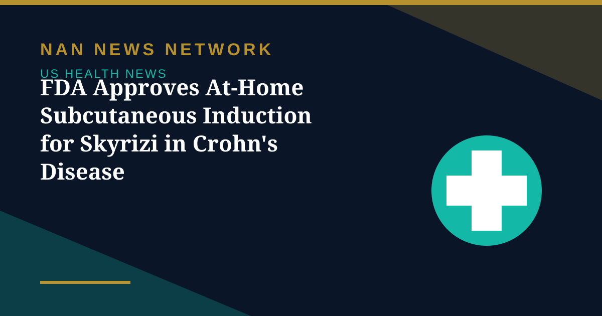

FDA Approves At-Home Subcutaneous Induction for Skyrizi in Crohn's Disease

AbbVie announced on October 31 that the US Food and Drug Administration has approved a subcutaneous induction regimen for Skyrizi (risankizumab-rzaa) for adults with moderately to severely active Crohn's disease.
Treatment that starts at home
Patients now have the option to start Skyrizi treatment at home, with induction doses delivered by an on-body injector induction pack, and then continue using an on-body injector once every eight weeks throughout maintenance treatment. The change removes the need for infusion-based induction for patients who choose the new regimen, a practical difference for a chronic condition that requires long-term therapy.
Backed by the AFFIRM trial
The approval is supported by positive results from the Phase 3 AFFIRM trial evaluating subcutaneous Skyrizi versus placebo in patients with moderately to severely active Crohn's disease. Skyrizi achieved superiority on the co-primary endpoints of clinical remission and endoscopic response at week 12. As with any prescription therapy, patients should discuss suitability, dosing and monitoring with their clinician rather than treating an approval announcement as a personal treatment recommendation.
Sources: AbbVie via Medical Update Online, October 31, 2026
More on US Health News
- FDA Grants Accelerated Approval to Voceryq, the First Plasmid DNA Immunotherapy in the US
- FDA Authorizes 24 Velo Nicotine Pouches, Bringing Total Authorized Pouches to 67
- FDA Updates Menopause Hormone Therapy Labels for Three More Products in Women's Health Push
- FDA Declares Trader Joe's Chicken Wrap E. Coli Outbreak Over After 50 People Fell Ill
- FDA Recalls More Than 21,000 Bottles of Blood Pressure Drug Over Excess Active Ingredient
- FDA Recall: Miyoko's Plant-Based Butter Pulled in 10 States Over E. Coli, Yeast and Mold
- CDC: Drug-Resistant Germs Cause Nearly 9.7 Million US Infections a Year
- CDC Deputy Director Jennifer Shuford to Leave After Midterms, Report Says
- FDA Clears Cullinan's Velinotamig Trial for Autoimmune Blood Disorders
- Regeneron Extends US Ebola Supply Deal Worth About $270 Million Through 2031
- FDA Warns San Francisco Fermented Foods Maker Over Pathogen Risks and Labeling
- Salmonella Oyster Recall Expands: What to Know About the Little Wicomico Outbreak
- Graziers Raw Milk Cheese Recall: 13 Sick, 8 Hospitalized as FDA Issues Class I Warning
- CDC and FDA Performance Ratings Hit All-Time Lows in Gallup Poll